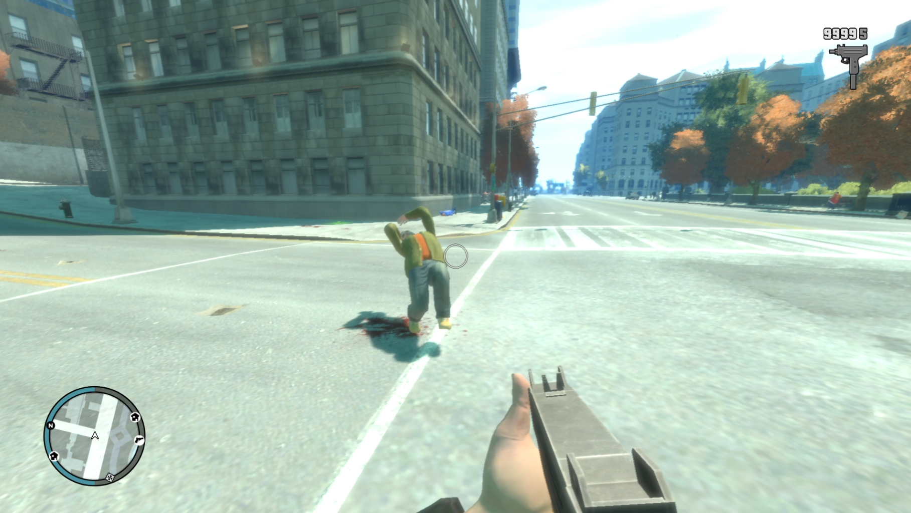
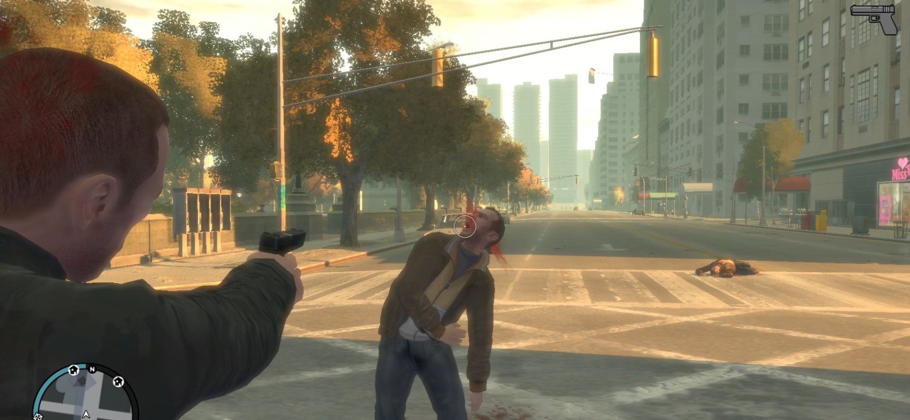
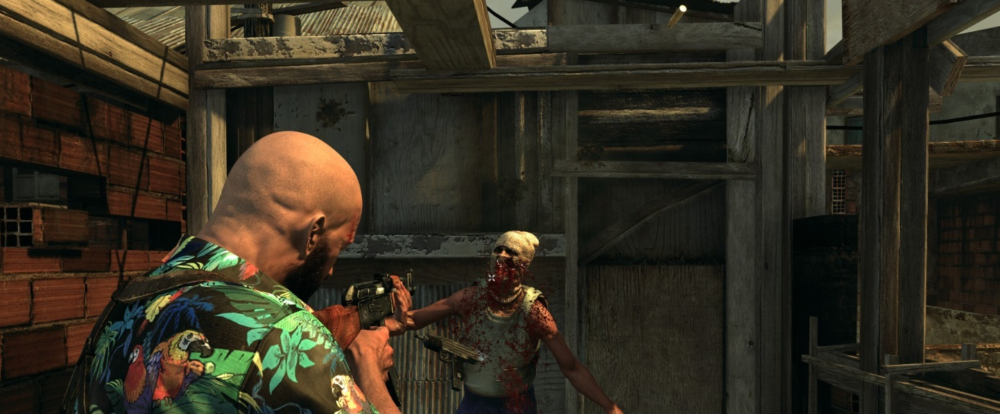

BetterEuphoriaIV

Drastically improves the Euphoria physics for Grand Theft Auto IV.
To install navigate to pc/data/game.rpf/data in OpenIV, extract the downloaded zip and put taskparams.txt in that directory.
BloodIV

Adds realistic and brutal blood spraying when being shot.
To install navigate to common/data/effects in OpenIV, extract the downloaded zip and put bloodFx.dat in that directory.
Max Pain 3

Overhaul of the Euphoria for Max Payne 3.
To install navigate to common.rpf/data/tune/tasks in OpenIV, extract the downloaded zip and put everything from that zip in the directory open in OpenIV.